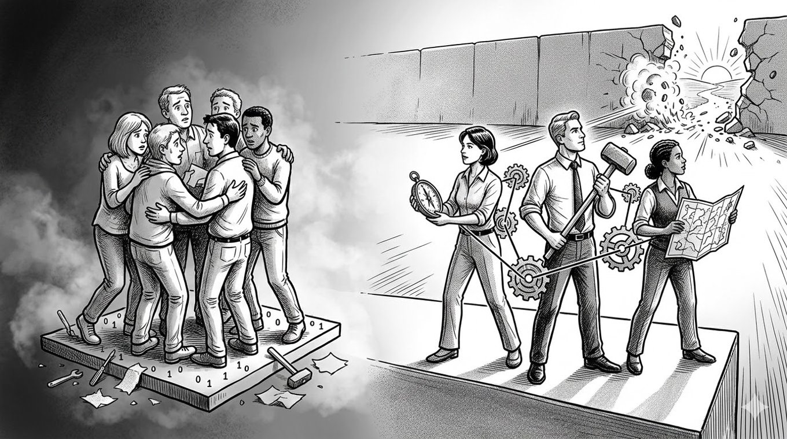

傷のなめ合いはビジネスじゃない。

「互助会チーム」と「グループファネル」の決定的な違い
どーも！とーるです！
今回は、2，3年前から続くSNS界隈にキラキラと輝く「コミュニティ」や「チーム」という名の罠についてお話していこうと思います。
「一人でやるより、みんなでやった方が楽しいし成果が出る！」
その言葉、一見正論に見えますが、ビジネスの現場では昔から「猛毒」になることが多々あります。
あなたが今いるその場所は、本物の「グループファネル」を構築するプロのチームですか？
それとも、ただの「傷のなめ合い互助会」ですか？
「楽しい環境」という名の麻薬
今のSNSには、「楽しい環境」だけを提供するコミュニティが溢れかえっています。
オフ会で集まり、お互いの夢を語り合い、共感し、承認し合う。
確かにそこには「居心地の良さ」があります。
日々の孤独な作業に疲れた心には、それはまるで砂漠のオアシスのように映ります。
しかし、冷静になって自分の銀行口座の残高を見てください。
その環境に浸かって、あなたの収益は1円でも増えましたか？
厳しいことを言いますが、自身のビジネスモデルの問題（商品力不足、集客スキルの欠如、市場選定のミス）を放置したまま、「ここにいればいつか売れるはず」「みんなが応援してくれるから頑張れる」と思っているのは、ビジネスではなく、単なる「現実逃避の互助会」です。
モチベーションは「お互いに高め合うもの」ではなく、「自分の実績と顧客の感謝から自然に湧き出るもの」であるべきです。
外から注入してもらうモチベーションは、切れた瞬間に反動で動けなくなる「麻薬」と同じなんです。
１×１×１・・・は何度掛けても「1」
実績もスキルもない初心者同士が「一緒に何かやりましょう！」と組む、自称ジョイントベンチャー（JV）。
はっきり言いますが、僕は全くオススメしません。
ビジネスのレバレッジは掛け算です。
しかし、実力が「1」に満たない未熟な者同士が組んだところで、結果は「1」のまま。
むしろ、意思決定の遅れ、責任のなすりつけ合い、価値観の相違といった「マイナス要素」が加わり、実質的には 0.5 になることすらあります。
掛け算の前に、まずは自分自身を「10」にする個の力が必要です。
0に何を掛けても0.1未満を掛ければ、数字は小さくなる一方。
初心者が組む理由の多くは「不安だから」という逃げ。
でも、ビジネスの荒波は「不安な者同士が手を繋いでいる」からといって手加減はしてくれません。
むしろ、共倒れのリスクを高めるだけです。
チーム販売システムが辿った無残な末路
過去、ネットビジネス界隈では「チームを組んで高額商品を販売し、その利益を分配する」というシステムが一部で大流行しました。
キラキラしたプロモーションの裏側で、何が起きたか知っていますか？
事例①ネットワークビジネス（MLM）の侵食：「チームで売れば楽」という仕組みが、いつの間にか特定の商品を買い込ませる、あるいは新規メンバーを勧誘してマージンを取るだけのMLMの温床になりました。
気づけばビジネス（価値提供）ではなく、単なる「兵隊集め」にすり替わっていたんです。
今もあふれているコミュニティではこのMLM絡みもあるので、MLM嫌いの方は注意してください。
事例②訴訟問題と「連鎖停止」の恐怖：リーダー格の人間が誇大広告や不当な販売を行い、行政処分や訴訟に発展した事例が多々あります。
その際、チームにいただけの末端メンバーも「共犯者」として名前が挙がったり、銀行口座が凍結されたりして、人生を棒に振る人が続出しました。
③信頼の「共倒れ」：一人がトラブルを起こせば、チーム全員の信頼が失墜します。
SNSという狭い世界では、「あの一味の一人か」というレッテルを貼られた瞬間、あなたの再起は絶望的になります。
他人の倫理観に自分の人生を預けることの恐ろしさを、もっと真剣に考えるべきです。
顧客リストというリスク
グループで活動する最大の恐怖は、「顧客リストの汚染」です。
あなたがコツコツと信頼を積み上げ、大切に集めた見込み客（顧客リスト）。それはビジネスにおける"命"です。
そのリストを、安易に「チームのオファー」や「仲間の商品」に流していませんか？
もし、そのオファーの中身がスカスカだったり、強引なセールスが行われたりしたらどうなるか。
顧客は「とーるさんが紹介したから信じたのに、裏切られた」と、紹介したあなたへの信頼を真っ先に捨てます。
一度汚れたリスト、一度失った信頼は、二度と元には戻りません。
自分のブランドを、他人の未熟なスキルや不明瞭な意図に預ける行為は、ビジネスにおける「自爆行為」以外の何物でもありません。
これが正解。プロが行う「グループファネル」の条件
「じゃあ、チームを組むのは全部ダメなの？」
そんなことはないです。
正しく構築する「グループファネル」は、互助会とは次元が違います。
役割の完全分業（プロの集団）：「仲良し」ではなく「集客のプロ」「教育（ライティング）のプロ」「クロージングのプロ」「商品提供のプロ」が、それぞれの圧倒的な個の力を持ち寄ります。
全員が「一人でも食っていける」レベルです。
責任の所在の明確化：感情ではなく「契約」で動きます。万が一のトラブルの際、誰がどう責任を取るのか、返金対応はどうするのかが、事前に契約書レベルで明確に決められています。
顧客満足度の優先（三方よし）：「自分たちの分配金」のためではなく、「このチームでしか提供できない圧倒的な価値」のために組みます。顧客に利益があることが大前提であり、自分たちの利益はその結果でしかありません。
プロのチームは、「自立した個」が、より大きな価値を世に出すために一時的に結成される「特殊部隊」のようなもんです。
読むなら覚悟が必要です。
↓↓↓
僕はここ数年、SNSを見てきて、「本当の意味でビジネスとして成功しているグループコミュニティ」を一度も見たことがありません。
なぜか？
それは、ビジネスがうまくいっている人は「群れる必要がない」からです。
一方で、SNSで目にする「仲良しグループ」の正体は、うまくいっていない人たちが、その不安を打ち消すために寄り添い合っているだけの集団です。
ビジネスにおけるグループ化には「正しいきっかけ」と「危ないきっかけ」があります。
もし、あなたのグループ化の動機が次の5つのうち1つでも当てはまるなら、悪いことは言いません。今すぐその手を離してください。
【警告】そのグループ化、この「きっかけ」なら即終了です
①「一人でやるのは不安・寂しいから」という【依存】
もっとも多いきっかけですが、もっとも危険です。
不安を埋めるために手を繋いでも、暗闇の中で二人して迷子になるだけです。
ビジネスの孤独は、成果でしか癒せません。
②「自分に足りないスキルを、誰かに補ってほしいから」という【他力本願】
「自分はライティングが苦手だから、書ける人と組もう」
一見効率的に見えますが、これは間違いです。
自分に「1」の力がない状態で組んでも、相手に搾取されるか、お互いの基準の低さに足を引っ張り合う結末しかありません。
③「ツール代や広告費を折半して安く済ませたいから」という【コスト逃避】
数万円の経費をケチるためにアカウントを共有したり、共同出資したりするのは「貧者の戦略」です。
後に売上が上がった際、権利関係で100%揉めます。
自分の城は、自分の金で建てるのが鉄則です。
④「あのインフルエンサーが"環境が大事"と言っていたから」という【思考停止】
「環境」とは、自分より格上のプロに揉まれる場所を指すのであって、同じレベルの初心者と傷をなめ合う場所ではありません。言葉の表面だけを掬って「仲良しごっこ」をしても、スキルは1ミリも向上しません。
⑤「みんなで紹介し合えば、楽に集客できると思ったから」という【相互互助の幻想】
「私のフォロワーにあなたを紹介するから、あなたも私を紹介してね」という身内ノリの拡散。
これは顧客から見れば「中身のない身内褒め」でしかなく、あなたの信頼を切り売りしているだけです。
海外で先行している本物の「グループファネル」や「プロチーム」が結成されるきっかけは、いつだって「圧倒的な個」同士が、より高い壁を乗り越えるために戦略的に手を組むときだけ。
「寂しいから」「楽をしたいから」という理由で集まったグループは、ビジネスの賞味期限が切れた瞬間に、互いを恨みながら解散していくことになります。
そんな悲しい結末を避けるために。
まずは、誰にも寄り添わずに立てる「孤高の1」になってください。
あなたが「10」の力を持ったとき、同じく「10」の力を持つ本物のプロが、向こうから声をかけてきます。
その時初めて、あなたのビジネスは本当の意味での「掛け算」へと進化するんです。
マジ危険よ。
とーる｜行動経済アナリスト